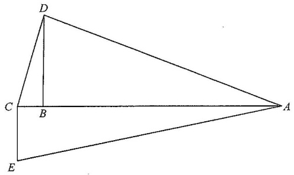

HKDSE Mathematics (Compulsory Part) · Paper 2
Geometry — Converse of Pythagoras' Theorem & Perimeter of a Quadrilateral
In the figure, \(ACE\) is a straight line. It is given that \(BC = 5\text{ cm}\), \(BD = 12\text{ cm}\), \(CD = 13\text{ cm}\), \(AD = 37\text{ cm}\) and \(CE = 9\text{ cm}\).
If \(\angle CBD = 90^\circ\), find the perimeter of the quadrilateral \(ADCE\).
A. \(76\text{ cm}\) B. \(90\text{ cm}\) C. \(100\text{ cm}\) D. \(180\text{ cm}\)

In \(\triangle CBD\), the three sides are known: \[ CB = 5,\qquad BD = 12,\qquad CD = 13. \]
Test the Pythagorean relation on the two shorter sides:
\[ CB^2 + BD^2 = 5^2 + 12^2 = 25 + 144 = 169. \]Compare with the square of the longest side:
\[ CD^2 = 13^2 = 169. \]So
\[ CB^2 + BD^2 = CD^2. \]By the converse of Pythagoras' Theorem, the angle opposite \(CD\) is \(90^\circ\):
\[ \angle CBD = 90^\circ. \]Since \(ACE\) is a straight line and \(\angle CBD = 90^\circ\), the angle between \(DB\) and the line \(ACE\) is a right angle too: \[ \angle ABD = 90^\circ. \] So \(\triangle ABD\) is a right-angled triangle with the right angle at \(B\).
Apply Pythagoras' Theorem in \(\triangle ABD\) (legs \(AB\), \(BD\); hypotenuse \(AD\)):
\[ AB^2 + BD^2 = AD^2 \] \[ AB^2 + 12^2 = 37^2 \] \[ AB^2 = 1369 - 144 = 1225. \]\[ AB = \sqrt{1225} = 35. \]
Since \(B\) lies between \(C\) and \(A\) on the straight line \(ACE\):
\[ AC = CB + BA = 5 + 35 = 40\text{ cm}. \]In the figure \(CE\) is drawn so that \(CE \perp AC\) (the right angle is marked at \(C\)). Hence \(\triangle ACE\) is right-angled at \(C\), and
\[ AC^2 + CE^2 = AE^2. \]\[ 40^2 + 9^2 = AE^2 \] \[ 1600 + 81 = AE^2 \] \[ AE^2 = 1681 \] \[ AE = \sqrt{1681} = 41\text{ cm}. \]
The perimeter of quadrilateral \(ADCE\) is the sum of its four sides:
\[ \text{Perimeter} = AD + DC + CE + EA \] \[ = 37 + 13 + 9 + 41 \] \[ = 100\text{ cm}. \]